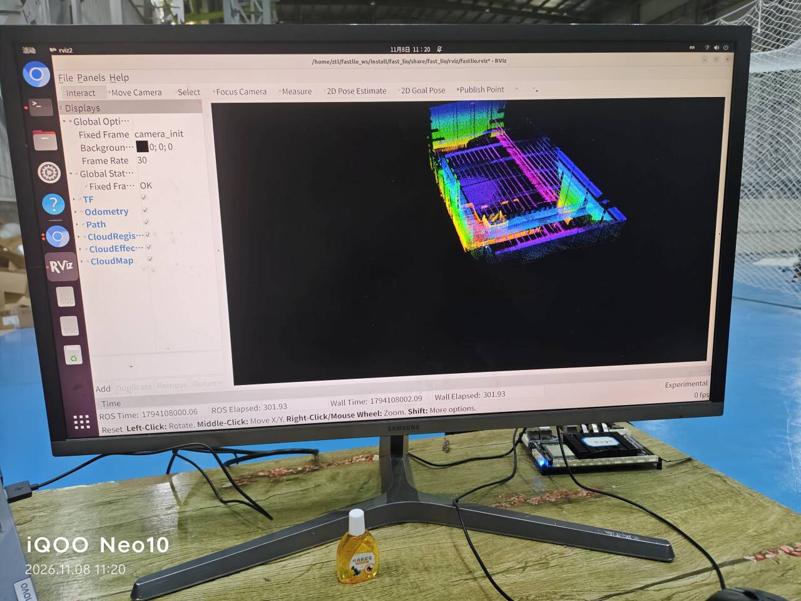

上一篇的结尾是「包有了」。这一篇是包的去处。 编译、配置、启动这些步骤本身不复杂，教程里都有，我按自己的顺序走了一遍。 真正值得记下来的是中间那段：点云是怎么一点点长成一张地图的， 以及我在同一个地方第二次撞了同一堵墙。
一、先把环境摆平
FAST-LIO 的 ROS 2 版本不在官方仓库里，用的是移植版。
编译前有个前提：Livox 的工作空间必须先 source，
因为 FAST-LIO 依赖 livox_ros_driver2/msg/CustomMsg 这个自定义消息类型。
少了这一步，编译到一半会报找不到消息头文件。
source /opt/ros/humble/setup.bash source ~/livox_ws/install/setup.bash mkdir -p ~/fastlio_ws/src cd ~/fastlio_ws/src git clone https://github.com/Ericsii/FAST_LIO_ROS2.git --recursive cd ~/fastlio_ws rosdep install --from-paths src --ignore-src -y colcon build --symlink-install
--recursive 不能省。这个仓库带了子模块（ikd-Tree 之类），
不加这个参数克隆下来是空目录，编译时会报一堆找不到的源文件，
而错误信息指向的是 FAST-LIO 自己的代码，很容易误判成版本不兼容。
--symlink-install 也建议加上，理由和上一篇第三节那个坑一样：
它让 install/ 里的配置指向源码，改 yaml 不用重新编译。
不加的话，你改的是 src/ 里的配置，运行时读的却是 install/ 里的旧副本，
改了没反应，还不报错。
colcon 默认按 CPU 核数并行编译，
很容易在链接阶段 OOM。降并行数就行：
colcon build --symlink-install --parallel-workers 2
二、mid360.yaml：只动这五个参数
配置目录里有 avia.yaml、horizon.yaml、mid360.yaml、
ouster64.yaml、velodyne.yaml 几份，Mid-360S 直接用自带的 mid360.yaml。
第一次跑通不要动参数。这不是保守，是因为同时改多个参数之后， 出了效果你分不清是哪个起的作用。要确认的只有下面五个：
| 参数 | 值 | 为什么是它 |
|---|---|---|
common.lid_topic |
/livox/lidar |
必须和驱动实际发布的话题一字不差，包括前面的斜杠 |
common.imu_topic |
/livox/imu |
就是上一篇补上的那个话题。这里是它唯一的用处 |
preprocess.lidar_type |
1 |
Livox 系列固定为 1。填错的话点云会被按别的雷达格式解析，出来是乱码点 |
preprocess.timestamp_unit |
3 |
时间戳单位。不要随意改——单位错了不会报错，只会让位姿逐渐发散 |
mapping.extrinsic_est_en |
true |
让算法在线估计雷达和 IMU 的相对位姿，先跑起来再说 |
另外 pcd_save 下面两项先设好，虽然这一篇还用不到：
pcd_save: pcd_save_en: true interval: -1 # -1 = 只在结束时存一份，不是每隔多少帧存一次
interval: -1 这一行值得单独说。见到的默认值五花八门，
有人写 10、写 50，那意思是「每 N 帧存一个 pcd」，走一圈能给你几百个文件。
第一次建图要的是一张完整地图，不是一堆碎片，
所以这里必须是 -1。
三、启动：两行命令，两个终端
# 终端 1：雷达驱动 source /opt/ros/humble/setup.bash source ~/livox_ws/install/setup.bash ros2 launch livox_ros_driver2 msg_MID360s_launch.py
# 终端 2：FAST-LIO source /opt/ros/humble/setup.bash source ~/livox_ws/install/setup.bash source ~/fastlio_ws/install/setup.bash ros2 launch fast_lio mapping.launch.py config_file:=mid360.yaml
三个 source 一行都不能少，而且是按顺序：
ROS 基础环境 → 雷达驱动（提供 CustomMsg）→ FAST-LIO 自己。
这里重申上一篇第六节那个点，因为它在这一步最容易复发：
启动雷达必须用 msg_MID360s_launch.py，不是 rviz_MID360s_launch.py。
前者发的是 CustomMsg，后者发的是 PointCloud2。
对 RViz 来说两种都能显示、看起来一模一样，但 FAST-LIO 只认前者。
qt.qpa.xcb: could not connect to display。
这个错误只影响 RViz，不代表算法有问题。加 rviz:=false 关掉，
然后在另一台有屏幕的机器上看话题。我这边是板子直接接显示器，所以没关。
四、Fixed Frame = camera_init：同一堵墙，第二次
第一周我在 RViz 里看到一片空白，原因是 Fixed Frame 还是默认的 map，
而系统里根本没有这个坐标系。那一周的解是改成 livox_frame——因为当时只有雷达自己。
这一周打开 RViz，画面又是空的。原因完全一样：
Fixed Frame 不对。只不过这次的正确答案换成了 camera_init。

Fixed Frame 已经是 camera_init；
二是它下面那行 Global Status: Fixed Frame [OK]——
RViz 其实一直在明确告诉你坐标系对不对，只是默认状态下这块面板是折叠的，
空白的时候人的第一反应是去翻话题，不会想到先展开这里
两次撞墙，其实是同一件事的两个面。我把它总结成一句：
Fixed Frame 必须是一个「此刻真的存在」的坐标系。
它不能是默认值，也不能是「逻辑上应该有」的名字。
第一周系统里只有 livox_frame，所以是它；
这一周 FAST-LIO 发布了 camera_init，所以是它。
判断标准不是「哪个名字对」，而是「哪个坐标系现在有数据在发」。
查法：ros2 run tf2_tools view_frames，或者直接看 /tf 有没有人发。
camera_init 这个名字有点误导——它不是相机的坐标系，
而是 FAST-LIO 内部定义的世界原点，就是「建图开始时雷达所在的那个位置」。
整张地图都以它为基准，所以它天然存在、天然有数据，也不需要额外的 TF 去连。
六个显示项对应的话题，一并记在这里：
| RViz 显示项 | 话题 | 看它干什么 |
|---|---|---|
Odometry | /Odometry | 当前位姿。它不动就说明算法没输出 |
Path | /path | 走过的轨迹。漂移在这里最直观——闭合处对不上就是漂了 |
CloudRegistered | /cloud_registered | 当前帧配准后的点云，动得最快 |
CloudEffective | /cloud_effected | 真正参与匹配的点。它比原始点云稀很多 |
CloudMap | /Laser_map | 累积地图。就是最后要存成 pcd 的那个 |
TF | /tf | 坐标系变换。这里空的话上面全都显示不出来 |
如果地图不出现，先别急着调参数，按这个顺序查：
ros2 topic hz /Laser_map ros2 topic hz /Odometry
有频率，问题在 RViz 的显示设置；没频率，问题在算法或数据。 这一条判断能把排查范围砍掉一半。
五、建图实录：274 秒、286 秒、301 秒
下面三段是同一次建图的不同时刻。我按 ROS Elapsed 排了序，
因为它比墙上时间更能说明「算法已经跑了多久」。
274.60 秒：第一次看见「结构」
286.14 秒：地图在长
301.93 秒：走完一圈，回到起点
三个时刻连起来看，正好是「在线建图」和「离线建图」的区别：
- 在线的时候，你看到的是「已走过的部分」。 雷达没到过的地方是黑的，地图边缘永远是未完成的。
- 所以在线看形状，判断不了精度。 你只能判断「有没有出图」「有没有明显崩掉」。 真正的精度要等走完一圈、看闭合处对不对得上。
- 301 秒那张圆角矩形，是这三种状态的最后一种。 中间那些锯齿状的边缘、密度不均的地面，都是这一段路走得快慢不均留下的痕迹。
六、走完一圈，到底验证了什么
上一篇定的动作规范里有一条是「走闭合回路，回到起点」。 这一周终于知道它为什么是硬要求：
FAST-LIO 没有回环检测。它的位姿是一路积分推下来的， 每一帧的误差都会累积到下一帧。所以：
| 你看到的现象 | 说明什么 | 接下来该改什么 |
|---|---|---|
| 回到起点，墙和墙对得上 | 这一圈的累积误差小，配置基本对 | 可以去存 pcd 了 |
| 回到起点，同一个墙角出现两条 | 累积漂移。这是正常的，只是量大小的问题 | 看漂移方向：绕 Z 转 = 陀螺零偏没估好；单向平移 = 尺度或外参有问题 |
| 走到一半地图就歪了、分层 | 不是漂移，是某一段直接崩了 | 回去看那一段的输入：是不是走太快、有没有经过玻璃、IMU 有没有掉帧 |
中间那一行是这一周最重要的认知：累积漂移不是 bug，是这类算法的固有属性。 我一开始以为「准」的意思是「和实际尺寸一致」，后来才明白， 在没有回环检测、没有 GNSS、没有外部基准的情况下， 能做到的是「局部一致、整体缓慢漂移」。 要消掉它得另外加东西（回环检测、或者后期用别的办法闭合）， 不是调参数能解决的。
七、这一周踩到的六个坑
| # | 现象 | 当时的判断 | 实际原因 | 怎么确认 |
|---|---|---|---|---|
| 1 | 编译报找不到 CustomMsg |
仓库版本不对 | 编译前没 source livox_ws |
同一终端里 echo $AMENT_PREFIX_PATH 看有没有 livox 路径 |
| 2 | 克隆下来是空目录、编译缺文件 | 网络下载失败 | 没加 --recursive，子模块没拉 |
ls src/FAST_LIO_ROS2 看有没有 ikd-Tree 目录 |
| 3 | 改了 yaml，行为没变 | 参数不生效 | 读的是 install/ 里的旧副本 |
编译时加 --symlink-install |
| 4 | RViz 全空，但话题有频率 | 算法没输出 | Fixed Frame 不是 camera_init |
展开 Global Options 看 Global Status 是不是 [OK] |
| 5 | SSH 启动后报 qt.qpa.xcb |
程序崩了 | 只是 RViz 打不开，算法在跑 | rviz:=false 后 topic hz /Odometry 还在就没事 |
| 6 | 编译到链接阶段被 kill | 代码有问题 | 内存不够，并行编译撑爆 | --parallel-workers 2 重来；dmesg | grep -i oom |
第 4 和第 5 条值得并在一起说：它们都是「看起来像算法坏了，其实跟算法无关」。 这一系列的坑基本都长这样——从第一周的网络，到这一周的图形环境， 真正难的地方从来不是写算法，是把「哪一层出问题」这件事先定下来。
八、下一步
地图在屏幕上，但它还在内存里。关掉终端就没了。 要真正拿来用——量尺寸、看质量、拿去和别人对齐——得把它存成文件。 那部分单独写了一篇，因为 CloudCompare 打开它那一刻， 出现了这一个月里第一个能拿来对账的数字。
这一周明确没做的两件，和上一篇的理由一样：
- 没做时间同步校准。
time_sync_en还关着，靠雷达内部时间戳。 - 没标定外参。
extrinsic_est_en是 true，让算法自己估。等装到机身上再动。